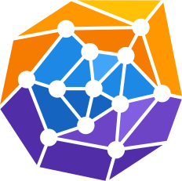

PathpyG
An Open Source package facilitating next-generation network analytics and graph learning for time series data on graphs. 
Get Started More InfoThe New Pathpy ¶
-
-
Great with Jupyter Notebooks
This package is built with excellent support for Jupyter Notebooks. It offers interactive HTML visualizations that enhance data analysis and exploration via D3.js.
-
GPU Accelerated
Since PathpyG is based on Torch, you can run your computations on the GPU. Even computations that cannot run on the GPU are parallelized for optimal performance.
-
-
Netzschleuder Support
We provide easy access to over 250 real world datasets via Netzschleuder - a catalogue and repository of network datasets with the goal of aiding scientific research.
-
Open Source
Our package is open source, promoting collaborative development and transparency. This allows anyone to contribute, modify, and distribute the software, fostering innovation and rapid improvement.